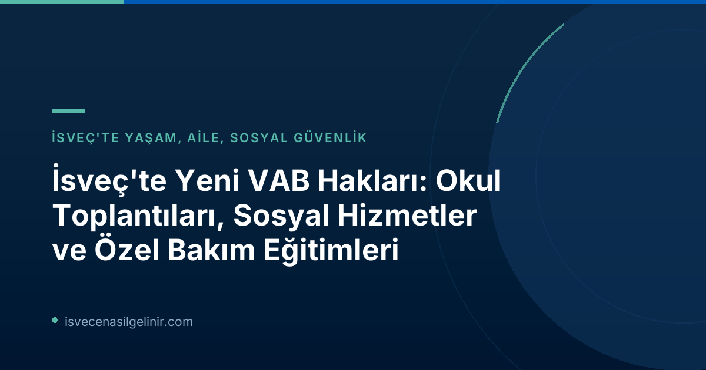

İsveç'te VAB Nedir ve Yeni Haklar Neyi Değiştiriyor?
İsveç sosyal güvenlik sisteminin önemli bir parçası olan VAB, ebeveynlere hasta çocuklarına bakmak veya çocuklarının belirli durumlarında (şimdi yeni eklenenlerle birlikte) okula veya anaokuluna gidememeleri durumunda evde kalmaları için sağlanan bir hak ve ekonomik destektir. Normal şartlarda çocuğun hastalığı durumunda kullanılan VAB, 1 Ocak 2026 tarihinden itibaren genişletildi. Bu yeni düzenlemeler, ebeveynlerin çocuklarının özel ihtiyaçları veya okul/sosyal hizmetlerle ilgili önemli süreçlerde yanlarında olmalarına imkan tanıyor.
Yeni VAB Kuralları Hangi Durumları Kapsıyor?
2026 yılı itibarıyla getirilen 3 yeni VAB hakkı, ebeveynlerin çocuklarının hayatındaki kritik anlarda destekleyici rol üstlenmesini kolaylaştırıyor. İşte bu yeni durumlar:
- Çocuğun Hastalığı veya Engelliliği Nedeniyle Okul/Anaokulu Toplantılarına Katılım:
Ebeveynler, çocuklarının devam ettiği anaokulu veya okulda, çocuğun hastalığı veya özel bir fonksiyonel kısıtlılığı (engellilik) sebebiyle düzenlenen toplantılara katılmak için VAB kullanabilecekler. Bu, çocuğun durumuyla ilgili eğitim, destek planlaması gibi önemli görüşmeleri kapsıyor.
- Sosyal Hizmetler ile İlgili Süreçlere Katılım:
Çocuğa yönelik sosyal hizmetler (socialtjänsten) tarafından yürütülen bir araştırma (utredning) veya ön değerlendirme (förhandsbedömning) süreçlerine ebeveynlerin katılması gerektiğinde de VAB hakkı tanınacak. Bu adım, özellikle risk altındaki veya özel destek ihtiyacı olan çocuklar için hayati önem taşıyan bu süreçlerde ebeveyn katılımını teşvik etmeyi amaçlıyor.
- Anaokulu/Okul Personeline Çocuğun Özel Bakım İhtiyaçları Hakkında Eğitim Verme:
Çocuğun diyabet veya şiddetli egzama gibi özel bir tıbbi durumu varsa ve anaokulu veya okul personelinin bu durumla ilgili "egenomsorg" (kendi kendine bakım) ihtiyaçları konusunda eğitilmesi gerekiyorsa, ebeveynler bu eğitimleri vermek için VAB alabilecekler. Bu, çocuğun okul ortamında güvende ve iyi bakılmış hissetmesini sağlamak için kritik bir adımdır.
İlk 6 Ayın VAB İstatistikleri: En Çok Hangi Hak Kullanıldı?
Försäkringskassan'ın 2026 yılının ilk altı ayına ait detaylı takibi, yeni VAB imkanlarının nasıl kullanıldığına dair önemli bilgiler sunuyor. Kurumun analizine göre, bu yeni haklar özellikle okul çağındaki çocukların ebeveynleri tarafından tercih edildi ve çoğu durumda günün sadece bir kısmı için kullanıldı.
Yeni VAB Hakları Kullanım Analizi (Ocak-Haziran 2026)
- Toplam Yararlanan Kişi Sayısı: Yaklaşık 2.500 tekil ebeveyn
- En Çok Kullanılan Durum: Anaokulu veya okul toplantılarına katılım (1.580 kişi)
- İkinci Sırada: Sosyal hizmetlerde çocukla ilgili araştırma/ön değerlendirme süreçlerine katılım (870 kişi)
- Üçüncü Sırada: Anaokulu/okul personeline çocuğun özel bakım ihtiyaçları hakkında eğitim verme (120 kişi)
- Yoğun Kullanım Yaş Grubu: En çok 11 yaşındaki çocuklar için
- Genel VAB İçindeki Oranı: Yeni eklenen bu 3 durum, genel VAB ödenekleri içinde çok küçük bir paya sahip.
Bu veriler, İsveç Vatandaşlık Sınavı sürecinde de karşılaşabileceğiniz İsveç sosyal sistemi hakkında önemli bilgiler sunabilir.
Försäkringskassan Analisti Alma Wennemo Lanninger'den Açıklamalar
Försäkringskassan analisti Alma Wennemo Lanninger, yeni düzenlemelerin kullanımına ilişkin değerlendirmelerde bulundu. Lanninger, "En yaygın olanı, ebeveynlerin anaokulu veya okulla yapılan toplantılar için bu yeni fırsatı kullanmasıdır. Takip, çoğu ebeveynin sadece günün bir kısmı için VAB kullandığını ve yeni fırsatların ağırlıklı olarak okul çağındaki çocuklar için kullanıldığını göstermektedir" dedi. Bu açıklama, yeni VAB haklarının özellikle okul-aile işbirliğini güçlendirme ve çocukların özel ihtiyaçlarına daha fazla odaklanma amacına hizmet ettiğini ortaya koyuyor.
Kimler Yeni VAB Haklarından Yararlanabilir?
Genel VAB kurallarına uygun olarak, İsveç'te sosyal güvenlik sistemine kayıtlı olan ve çalışan ebeveynler bu yeni haklardan faydalanabilir. VAB ödeneği alabilmek için çocuğun 8 yaşının altında olması (veya belirli durumlarda daha büyük çocuklar için de geçerli olması) gibi temel şartlar bulunmaktadır. Yeni eklenen bu üç durum, mevcut VAB mevzuatının bir uzantısı olarak hizmet vermektedir.
VAB Başvurusu Nasıl Yapılır ve Nelere Dikkat Edilmelidir?
Yeni VAB haklarından yararlanmak isteyen ebeveynlerin, diğer VAB başvurularında olduğu gibi Försäkringskassan'a başvuruda bulunmaları gerekmektedir. Başvurular genellikle kurumun online hizmetleri veya formlar aracılığıyla yapılır. Özellikle toplantı veya eğitim gibi durumlarda, ilgili kurum (okul, sosyal hizmetler) tarafından verilen katılım teyit belgeleri veya diğer ispatlayıcı dokümanlar talep edilebilir. Sürecin sorunsuz ilerlemesi için, ilgili toplantı veya eğitimin tarih ve saati, çocuğun durumuyla ilgili detaylar gibi bilgilerin doğru ve eksiksiz bir şekilde beyan edilmesi önemlidir.
Önemli Bilgiler ve Başvuru İpuçları
- Duyuruyu Takip Edin: Försäkringskassan'ın resmi sitesi forsakringskassan.se üzerinden güncel duyuruları ve detaylı bilgileri edinebilirsiniz.
- Belgeleri Hazırlayın: Toplantı davetiyesi, sosyal hizmetler yazışmaları, tıbbi onaylar gibi destekleyici belgeleri başvurunuzdan önce hazır bulundurun.
- Online Başvuru: Försäkringskassan'ın web sitesi üzerinden hızlı ve kolayca başvurunuzu yapabilirsiniz.
- İletişimde Kalın: Başvurunuzla ilgili herhangi bir belirsizlikte veya ek bilgi talebinde Försäkringskassan ile iletişime geçmekten çekinmeyin.
Sonuç
İsveç'te 2026 itibarıyla getirilen yeni VAB hakları, ebeveynlerin çocuklarının eğitim, sağlık ve sosyal refah süreçlerinde daha aktif rol almalarını sağlamak amacıyla atılmış önemli bir adımdır. Özellikle okul toplantıları için kullanımın yoğun olması, ebeveynlerin çocuklarının eğitim hayatındaki katılıma verdiği önemi göstermektedir. Bu rehber, İsveç'teki yaşamınıza adapte olurken bu ve benzeri sosyal haklarınızı anlamanıza yardımcı olmayı hedeflemektedir.
Referanslar
- sverigemedborgarskapsprov.com
- Försäkringskassan - Ny möjlighet att vabba har nyttjats mest för möten i skolan
İsveç'e Göçmenlik ve Vatandaşlık Süreçleri Hakkında Daha Fazla Bilgi Edinin
İsveç'teki yaşam, çalışma, eğitim ve vatandaşlık süreçleri hakkında kapsamlı rehberlerimize göz atarak İsveç maceranıza sağlam bir başlangıç yapın.